Practica 3: Señales continuas
Profesor: Dr. Rafael Matrínez Martínez
Alumnos:
- Aguirre Solis Brenda Melissa
- Cordero Montes de Oca Luis Alberto
Contents
Objetivos
- Manipulación básica de MATLAB
- Gráficas de señales reales y complejas continuas
- Transformación de señales continuas (escalamientos y traslaciones)
- Calculo de energía y potencia de señales continuas
Introduccion
MATLAB es el nombre abreviado de “MATrix LABoratory”. MATLAB es un programa para realizar cálculos numéricos con vectores y matrices que trabaja con MacOs, Linux y Windows. Como caso particular puede también trabajar con números escalares ?tanto reales como complejos?, con cadenas de caracteres y con otras estructuras de información más complejas. Una de las capacidades más atractivas es la de realizar una amplia variedad de gráficos en dos y tres dimensiones. MATLAB tiene también un lenguaje de programación propio.
Matlab es un lenguaje de programación desarrollado por The Mathworks, Matlab nace de las necesidades, ingenieros y matemáticos, por lo que el desarrollo de Matlab comprende un potente lenguaje de alto nivel y la incorporación de funciones gráficas más allá de los lenguajes de programación C y Fortran.
MATLAB es una herramienta propietaria. Sin acceso a su código fuente, tiene una comprensión limitada de cómo funciona y cómo puede modificarlo. Entre sus limitantes de encuentra el alto costo, donde las tarifas de licencia para una sola copia pueden alcanzar los miles de dólares.
Afortunadamente, hay buenas alternativas de código abierto. Dependiendo de su objetivo exacto, puede encontrar que uno u otro se ajustará mejor a sus necesidades específicas. Aquí hay tres para considerar:
GNU Octave, puede ser la alternativa más conocida a MATLAB. En desarrollo activo durante casi tres décadas, Octave se ejecuta en Windows, Mac y Linux, y está empaquetado para la mayoría de las distribuciones principales. Si está buscando un proyecto que sea lo más parecido posible al lenguaje MATLAB real, Octave puede ser una buena opción para usted; se esfuerza por una compatibilidad exacta, por lo que muchos de sus proyectos desarrollados para MATLAB pueden ejecutarse en Octave sin necesidad de modificaciones.
Scilab, es otra opción de código abierto para computación numérica que se ejecuta en todas las plataformas principales: Windows, Mac y Linux incluidos. Scilab es quizás la alternativa más conocida fuera de Octave, y (como Octave) es muy similar a MATLAB en su implementación, aunque la compatibilidad exacta no es un objetivo de los desarrolladores del proyecto.
Scilab se distribuye como fuente abierta bajo la licencia CeCILL compatible con GPL, y su código fuente está disponible en su página oficial.
SageMath es otro sistema de software de matemáticas de código abierto que podría ser una buena opción para aquellos que buscan una alternativa de MATLAB. Está construido sobre una variedad de conocidas bibliotecas de computación científica basadas en Python, y su propio lenguaje es sintácticamente similar a Python. Tiene muchas características que incluyen una interfaz de línea de comandos, cuadernos basados en navegador, herramientas para incrustar fórmulas en otros documentos y, por supuesto, muchas bibliotecas matemáticas. Está disponible bajo una licencia GPL, y su código fuente se puede encontrar en el sitio web del proyecto.
Ventajas de Matlab
Con adecuadas optimizaciones, son rápidos en ejecución y de alta precisión. Amplio soporte Matemático además de posibilidad de uso de precisiónextendida en los cálculos. Pueden ser paralelizados (MPI, PVM, OpenMP). Amplio soporte de funciones ya desarrolladas. Rápido prototipado. Integración con dispositivos hardware. Una comunidad muy extendida, hay foros en la web donde se comparten experiencias como soporte e ilustración a los usuarios. Comercial, es fácil de adquirir y no habrá problemas a la hora de interactuar con otros programadores.
Desventajas de usar MatLab
Gestión “oscura” de la memoria. Problemas eventuales de velocidad Proceso laborioso susceptible a cometer errores en la programación de algoritmos es conveniente depurar correctamente los códigos realizados. Distribución de ejecutables. Es preciso linkar con librerías numéricas y gráficas y es usual que dependan del lenguaje de programación y del sistema operativo. El ordenador donde la aplicación tiene que ser utilizada necesita MCR (MATLAB Component Runtime para Que los archivos MATLAB funcionen correctamente. Las herramientas de debugging y profiling no suelen ser "fáciles de utilizar para algunos usuarios.
Ejercicio 1
Crea una función que se llame fun1 y reciba dos parametros 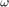 y 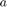 la función debe regresar la evaluación 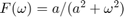, esta función debe trabajar con 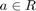 y 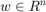. Debe mostrar su código en el reporte (sin ejecutar).
function [out] = fun1(w,a)
if imag(a)~=0
disp('error')
else
out=a./(a.^2+w.^2);
end
endEjercicio 2
Construya una función que gráfique funciones de 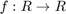 en el formato de su elección y pruebe su código mostrando la gráfica de 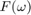 vs en el intervalo 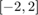 para 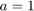, no debe incluir el código, solo el uso de la función para mostrar la gráfica

Ejercicio 3
Construya una función que gráfique funciones de 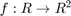 en el formato de su elección y pruebe su código mostrando la gráfica de la transformada de Fourier 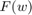 en 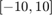 de la función 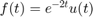, puede utilizar una función anonima para este fin, no debe incluir el código, solo el uso de la función para mostrarla gráfica. Reporte la gráfica de 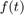 de 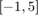 (recuerde que ya tiene una función para esto). Reporte del espectro de magnitud y del espectro de fase en (puedes con sultar con help la descripción de abs, angle, atan2). Solo reporte las graficas.


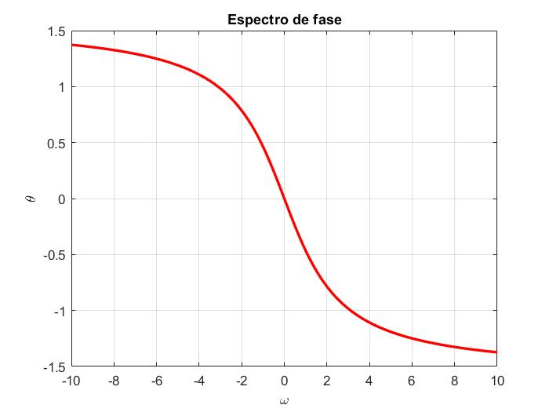
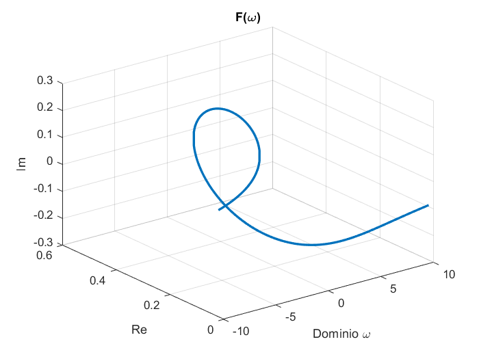
Ejercicio 4
Realiza las mismas operaciones que Lathi en las secciones M1.1 a M1.4 que se encuentra al final del capítulo 1 y antes de la sección de problemas, cambie los inline por funciones anónimas
close all; clear all; clc; % M1.1 % Función Anónima f = @(t) exp(-t).*cos(2*pi*t); % Gráfica de la función anónima t = -5:0.01:5; figure(1) plot(t, f(t),'m', 'LineWidth', 2); title('M1.1: f(t) = e^{-t}cos(2\pit)'); xlabel('t'); ylabel('f(t)'); grid on;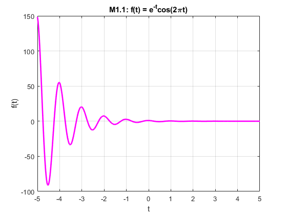
M1.2
% Función Anónima u(t) u = @(t) t >= 0; % Gráfica de u(t) figure(2); hold on; plot(t, u(t),'g', 'LineWidth', 2); title('M1.2: Escalon u(t)'); xlabel('t'); ylabel('u(t)'); grid on; % Función Anónima p = @(t) u(t) - u(t-1); % Gráfica de p(t) figure(3); hold on; plot(t, p(t),'c', 'LineWidth', 2); title('M1.2: p(t) = u(t) - u(t-1)'); xlabel('t'); ylabel('p(t)'); grid on;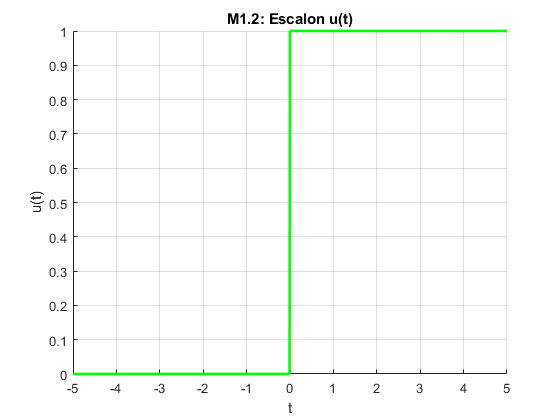 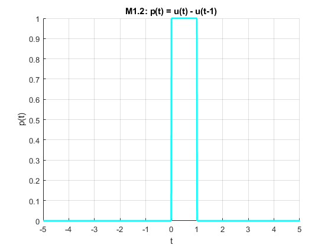
%M1.3 % Función Anónima f = @(t) exp(-t).*cos(2*pi*t); % Anonymous Function g = @(t) f(t).*u(t); % Gráfica g(t) figure(4); hold on; plot(t, g(t),'k', 'LineWidth', 2); title('M1.3: g(t)'); xlabel('t'); ylabel('g(t)'); grid on; % Gráfica g(2t+1) figure(5); hold on; plot(t, g(2*t+1),'y', 'LineWidth', 3); title('M1.3: g(2t+1)'); xlabel('t'); ylabel('g(2t+1)'); grid on; % Gráfica g(-t+1) figure(6); hold on; plot(t, g(-1*t+1),'m', 'LineWidth', 2); title('M1.3: g(-t+1)'); xlabel('t'); ylabel('g(-t+1)'); grid on; % Función Anónima h = @(t) g(2*t+1) + g(-1*t+1); % Gráfica g(-t+1) figure(7); hold on; plot(t, h(t), 'LineWidth', 2); title('M1.3: h(t) = g(2t+1) + g(-t+1)'); xlabel('t'); ylabel('h(t)'); grid on;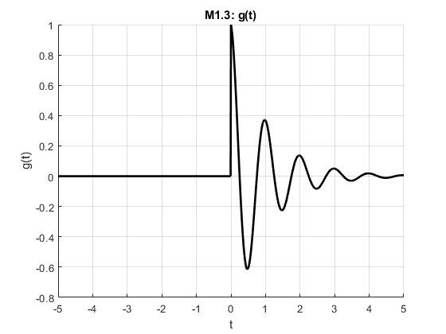 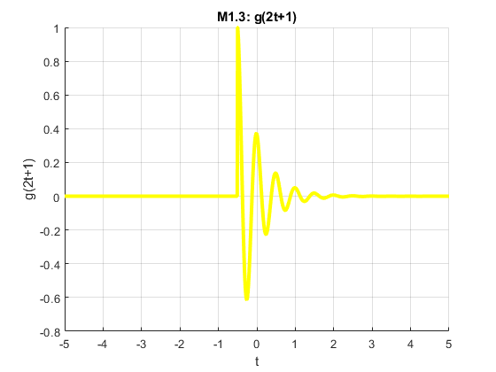 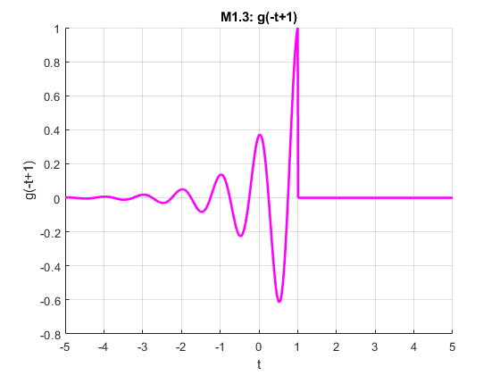 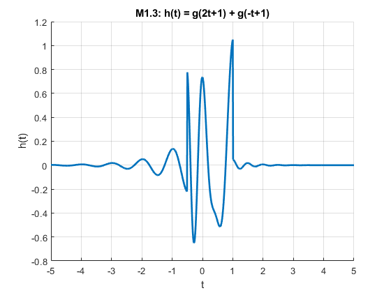
%M1.4 % Definiciones u = @(t) t >= 0; x = @(t) exp(-t).*(u(t)-u(t-1)); x2 = @(t) exp(-2*t).*(u(t)-u(t-1)); % Energía de x(t) % El resultado tendrá un 0.1% de error relativo t = 0:0.001:1; % Integración numérica mediante aproximación rectangular (sum) E_x = sum(x(t).*x(t)*0.001); display(E_x); % Integración numérica mendiante cuadratura de Simpson (quad) % Se debe elevar al cuadrado la señal e indicar los límites de integración S_x = integral(x2,0,1); display(S_x); % Energía de g(t) t = 0:0.001:100; % Definiciones f = @(t) exp(-t).*cos(2*pi*t); f2 = @(t) exp(-2*t).*(cos(2*pi*t)).^2; g = @(t) f(t).*u(t); g2 = @(t) f2(t).*u(t); % Integración numérica mediante aproximación rectangular (sum) E_g = sum(g(t).*g(t)*0.001); display(E_g); % Integración numérica mendiante cuadratura de Simpson (quad) S_g = integral(g2,0,100); display(S_g); % Energía de h(t) t = -2:0.001:2; % Definiciones h = @(t) g(2*t+1) + g(-1*t+1); h2 = @(t) g2(2*t+1) + g2(-1*t+1); % Integración numérica mediante aproximación rectangular (sum) E_h = sum(h(t).*h(t)*0.001); display(E_h); % Integración numérica mendiante cuadratura de Simpson (quad) S_h = integral(h2,-1,1); display(S_h);
E_x =
0.4328
S_x =
0.4323
E_g =
0.2567
S_g =
0.2562
E_h =
0.3769
S_h =
0.3793
Ejercicio 5
Resuelve el problema 1.2.2 usando las herramientas del paso anterior.
t = -8:0.01:10; % Definiciones u = @(t) t >= 0; x = @(t) -t.*(u(t+4)-u(t))+t.*(u(t)-u(t-2)); % Gráfica de la señal x(t) figure(8); hold on; plot(t, x(t),'m', 'LineWidth', 2); title('x(t) = -t(u(t+4)-u(t))+t(u(t)-u(t-2))'); xlabel('t'); ylabel('x(t)'); grid on;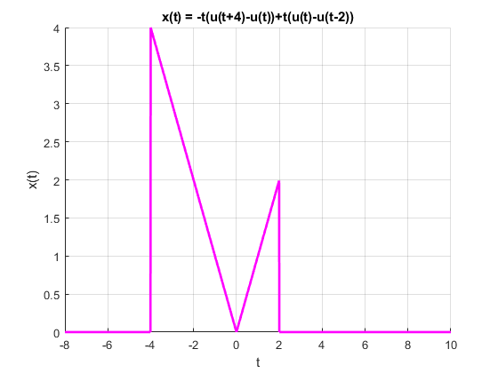
%a) x(t-4) figure(9); hold on; plot(t, x(t-4),'k', 'LineWidth', 2); title('a) x(t-4)'); xlabel('t'); ylabel('x(t-4)'); grid on; % b) x(t/1.5) figure(10); hold on; plot(t, x(t./(1.5)),'y', 'LineWidth', 2); title('b) x(t/1.5)'); xlabel('t'); ylabel('x(t/1.5)'); grid on; % c) x(-t) figure(11); hold on; plot(t, x(-t),'g', 'LineWidth', 2); title('c) x(-t)'); xlabel('t'); ylabel('x(-t)'); grid on; % d) x(2t-4) figure(12); hold on; plot(t, x(2*t-4),'b', 'LineWidth', 2); title('d) x(2t-4)'); xlabel('t'); ylabel('x(2t-4)'); grid on; % e) x(2-t) figure(13); hold on; plot(t, x(2-t),'r', 'LineWidth', 2); title('e) x(2-t)'); xlabel('t'); ylabel('x(2-t)'); grid on;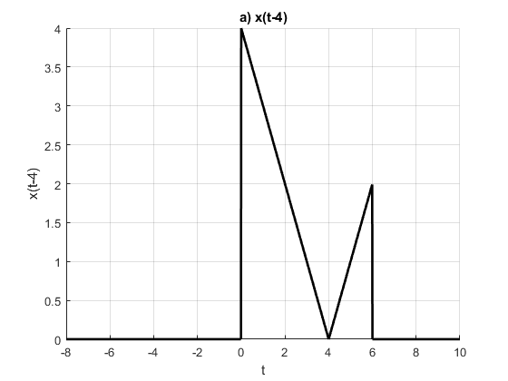 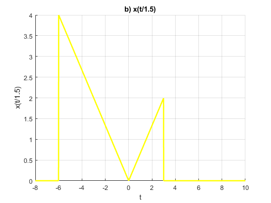 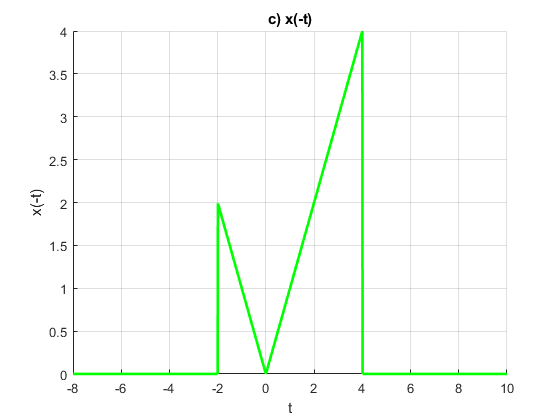 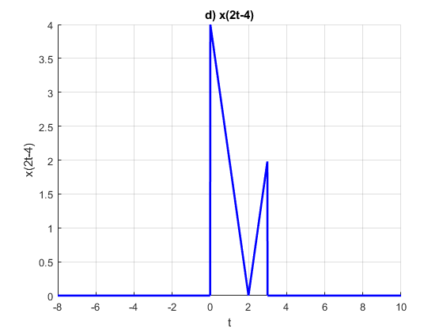 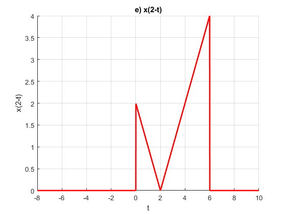
Ejercicio 6
Escriba una función que se llame energia que reciba como argumento una función (anónima o simbólica) y que regrese el calculo de la energía, para esto puede resultar útil investigar las instrucciones int , integral Se presupone utilizar el código solo con funciones de energia. Muestre el código sin ejecutar, y posteriormente resuelva el problema 1.1.3
function [resultado]= energia(funevaluar) %la funcion energia recibe un argumento que es la funcion en terminos de t syms t limiteinferior=input('ingresa el limite de la integral ')
limitesuperior=input('ingresa el limite superior de la integral ')resultado=int(abs(funevaluar).^2,t,limiteinferior,limitesuperior);
end
a. Find the energies of the pair of signals x(t) and y(t) depicted in Fig. P1.1-3a and P1.1-3b. Sketch and find the energies of signals x(t) + y(t) and x(t) ? y(t).
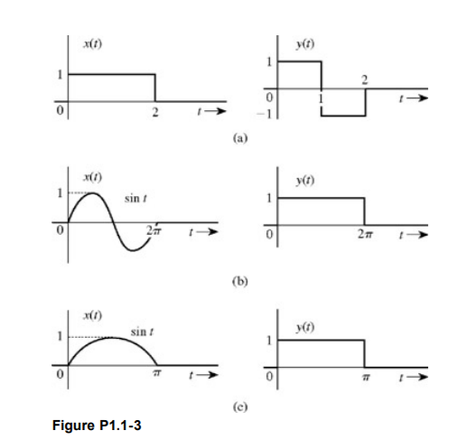
(a)
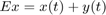
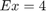
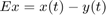

(b)
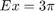

c. Repeat part (a) for the signal pair illustrated in Fig. P1.1-3c. Is your observation in part (a) still valid?
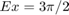

Ejercicio 7
Escriba una función que se llame potencia que reciba como argumento una función (anónima o simbólica) y que regrese el cálculo de la potencia para esto puede resultar útil investigar las instrucciones int , integral Se presupone utilizar el código solo con funciones de potencia. Muestre el código sin ejecutar, y posteriormente resuelva el problema 1.1.4
function [resultado]=potencia(funb) %función que recibe una expresión en términos de t syms t limiteinferior=input('ingresa el limite inferior de la funcion ') %límite inferior -T0/2 limitesuperior=input('ingresa el limite superior de la funcion ') %límite superior T0/2 t0=abs(limiteinferior)+abs(limitesuperior) %calculamos el t0 a partir de los límites, tomamos su valor absoluto para realizar la suma resultado=(1/t0)*int(abs(funb).^2,t,(-t0/2),(t0/2)); %cálculo de la integral usando la fórmula de la potencia sin el límite end
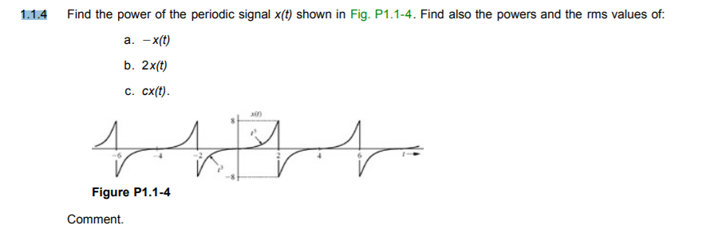
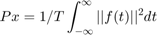
Se sabe que el valor rms es la raíz cuadrada de la potencia
a)
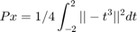
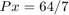
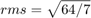
b)
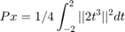
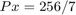
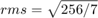
c)
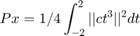
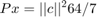
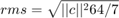
Referencias
- Manual de comandos enlace
- Juan Carlos S.U.. (2015). "Definición MATLAB". 16/4/2019, de Weebly Sitio web: https://juancarlosusomatlab2015.weebly.com/definicion-matlab.html
- Jason Baker. (2017). "3 open source alternatives to MATLAB". 16/4/2019, de opensource.com Sitio web: https://opensource.com/alternatives/matlab
- Andree Gutierrez Suclla. (2016). "MATLAB Ventajas y Desventajas". 16/4/2019, de SCRIBD Sitio web: https://es.scribd.com/document/261176770/MATLAB-Ventajas-y-Desventajas
- Canal de Mates y Así enlace
- Documentacion de MATLAB
- Matlab
- Conceptos basicos en octave
- enlace de descarga o visualizacion sobre un libro para aprender python